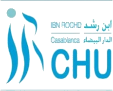

Bonjour, je suis Yassine Dahbi
Technicien en Maintenance et Génie Biomédical
CONTACT
Téléphone : 0710713772
Email : Dahbi-YASSINE@outlook.fr
Adresse : Hay Hassani, Casablanca
LinkedIn : /yassine-dahbi-142302268/
Télécharger mon CV (PDF)COMPÉTENCES
Compétences Techniques & Spécifiques
Compétences Transversales
LANGUES
Français : B1
Anglais : A2
CENTRES D'INTÉRÊT
CERTIFICATIONS
Respirateur de réanimation: Servo-air/n
Formation sur la maintenance des respirateurs de réanimation.

Respirateur d'anesthésie : Flow-c/i
Compétence sur les respirateurs d'anesthésie.

Bistouri électrique : ESG-400
Formation sur l'unité chirurgicale avancée ESG-400.
Échographie : ACUSON Maple™
Certificat de formation sur le système d'échographie ACUSON Maple™.
Endoscopie : EVIS EXERA III
Formation sur la colonne d'endoscopie EVIS EXERA III.
EXPÉRIENCES PROFESSIONNELLES
Stage PFE
HPIC Casablanca
Avril 2025 – Juin 2025- Maintenance préventive et corrective sur un large parc d'équipements.
- Installation et mise en service de nouveaux dispositifs.
- Participation à une caravane médicale.
Stage technique
HPIC Casablanca
Juin 2024 – Août 2024- Calibration et dépannage de dispositifs variés.
- Rédaction de rapports techniques et gestion d'inventaire.
Stage d'observation
 CHU Ibn Rochd
Juillet 2023 – Août 2023- Observation des processus de maintenance en milieu hospitalier.
- Assistance du personnel dans la vérification des équipements.
PROJETS ACADÉMIQUES
Développer l'Autonomie Technique : Conception d'outils de test et automatisation des procédures à l'HPIC
Ce projet de fin d'études a visé à structurer et fiabiliser le service biomédical de l'Hôpital Privé International de Casablanca. Mes réalisations clés incluent :
- Conception et réalisation d'outils de test "low-tech" : Simulateur ECG et testeur de sécurité électrique, permettant une maîtrise des coûts et un renforcement de l'autonomie technique.
- Standardisation des pratiques de maintenance : Création de protocoles détaillés et illustrés pour le nettoyage, la maintenance préventive (ventilateurs Getinge Servo-air et Flow-i, moniteurs Nihon Kohden) et la calibration (pousse-seringues Mindray Benfusion SP3).
- Automatisation de la gestion des rapports d'intervention : Implémentation d'une solution numérique (Google Forms, Apps Script) pour la génération, la diffusion et l'archivage automatisés des rapports PDF, garantissant une traçabilité complète et immédiate.
Système de mesure du niveau d'une poche de perfusion
Développement d'un système basé sur Arduino pour mesurer et afficher le niveau de remplissage d'une poche de perfusion, optimisant la surveillance en temps réel.
Moniteur ECG basé sur la carte Arduino
Conception et réalisation d'un moniteur électrocardiogramme (ECG) utilisant une carte Arduino, permettant l'acquisition et la visualisation des signaux cardiaques.
Prototypage testeur ECG
Création d'un prototype de testeur pour vérifier le bon fonctionnement des appareils ECG, assurant la fiabilité des diagnostics.
FORMATION
Licence en Maintenance et Génie Biomédical
ESM6ISS – Casablanca, Maroc
2022-2025